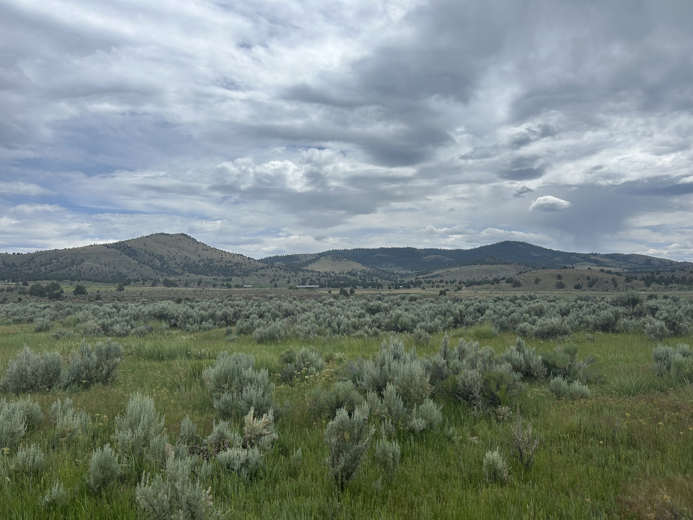
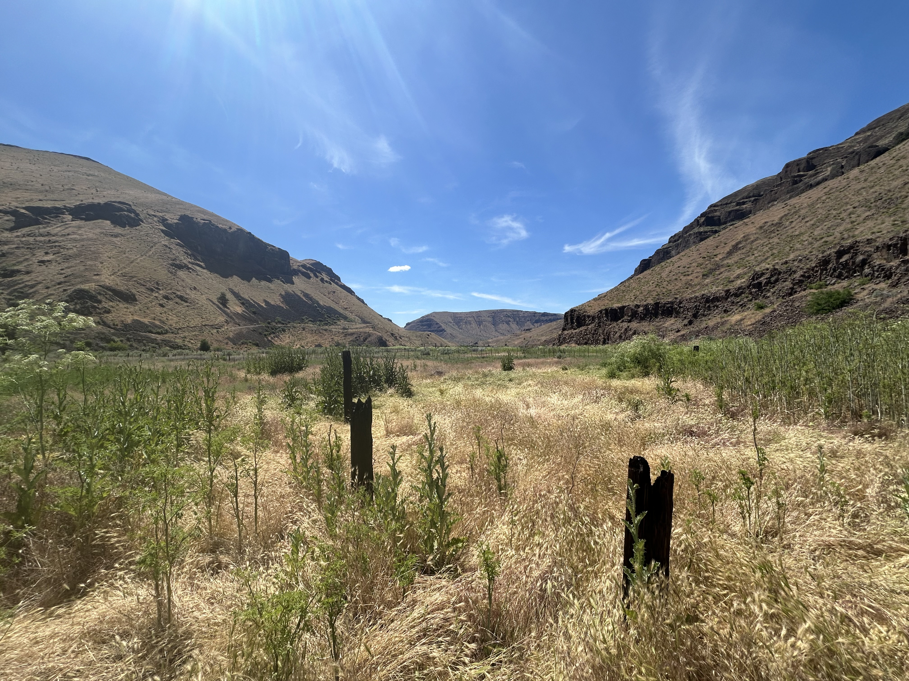

Upper Crooked River — LiDAR Floodplain Analysis
A GIS and Python-driven workflow for extracting and analyzing LiDAR-derived Relative Elevation Models across 142 river parcels along 24 miles of the Upper Crooked River in central Oregon.
Geospatial Data Scientist
Graduate researcher at
Western Washington University

My research investigates how size and severity of wildfires alter snowpack dynamics and streamflow response in west-slope Cascade watersheds. As a graduate researcher in Environmental Studies at Western Washington University, I integrate multi-sensor remote sensing, climate data, geospatial analysis, and Python-based computational workflows to quantify post-fire snowpack dynamics at both watershed and regional scales. Within my graduate studies, I am working towards an Environmental Data Science Certificate to strengthen my statistical and machine learning methods. Through my consulting practice, Cascadia Spatial Solutions, I apply this methodological foundation with local organizations. Past work includes geospatial data analysis, mapping, visualization, Survey123 field data collection systems, and reproducible geospatial workflows.
Investigating fire effects on snowpack dynamics
My MA thesis at Western Washington University examines how scale and severity of wildfire alters snowpack accumulation and ablation in west-slope Cascade watersheds, where a warming rain-snow transition makes snowpack especially sensitive to disturbance. This research is necessary because it addresses the need for improved understanding of post-fire hydrological processes. These altered processes have the ability to impact vegetation recovery, reburn potential, and downstream water resource availability for anthropogenic and ecological systems. I use satellite remote sensing and spatial statistics to compare snow dynamics across burn severity gradients within large fire scars.

A GIS and Python-driven workflow for extracting and analyzing LiDAR-derived Relative Elevation Models across 142 river parcels along 24 miles of the Upper Crooked River in central Oregon.

Spatial analysis and mapping supporting beaver stronghold restoration assessment along Thirtymile Creek — including DEM-derived slope, REM-based valley bottom delineation, Survey123 dataset processing, and interactive ArcGIS Online deliverables.

Short project description goes here. Replace with your next featured project when ready.